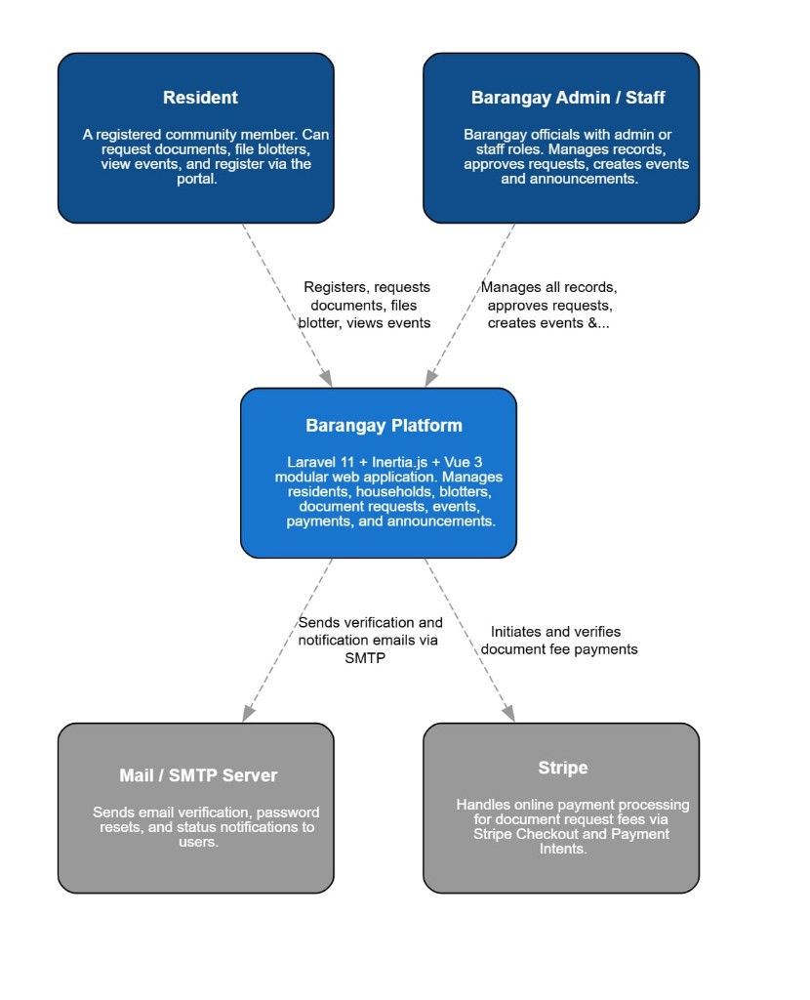
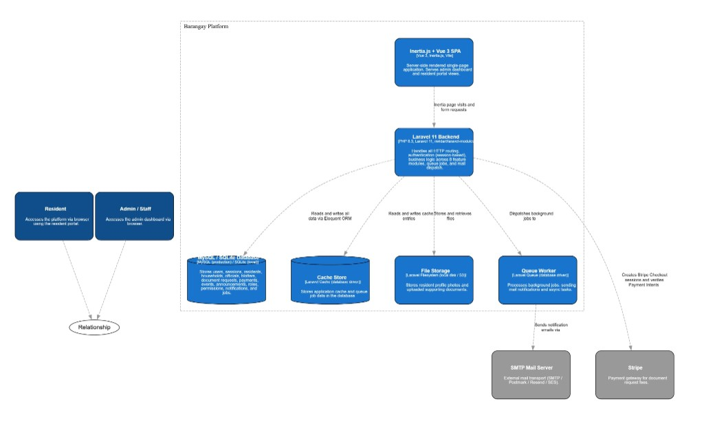
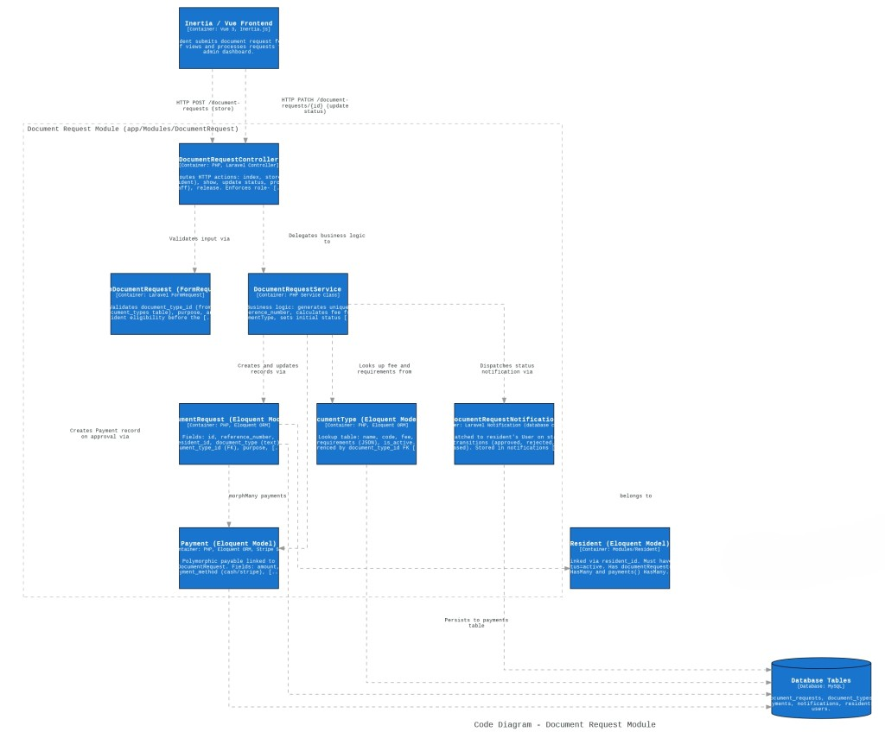

Level 1
System Context Diagram
Shows the Barangay Platform as a single system, its primary users, and key external dependencies.

Scope: people and external systems around the platform boundary.
This page presents the C4 model in standard progression: Level 1 (System Context), Level 2 (Container), and Level 3 (Component).
Shows the Barangay Platform as a single system, its primary users, and key external dependencies.

Scope: people and external systems around the platform boundary.
Breaks the platform into runtime/building containers (frontend, backend, database, cache, queue, storage) and their interactions.

Scope: deployable/operational containers and communication paths.
Details internal components in the Document Request module, including controller, service, request validation, models, and notification flow.

Scope: internal code-level components for one module boundary.